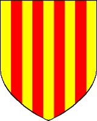

98448938510 Count Gerard de Roussillion
Greve av Paris & Metz. Blev ca 87 år.

Född:
790 Roussillion, Isere, France. [1]
Död:
omkring 877 Roussillion, Isere, France. [1]
Barn:
Personhistoria
790
Födelse 790 Roussillion, Isere, France
[1]
877?
Död omkring 877 Roussillion, Isere, France
[1]
Källor